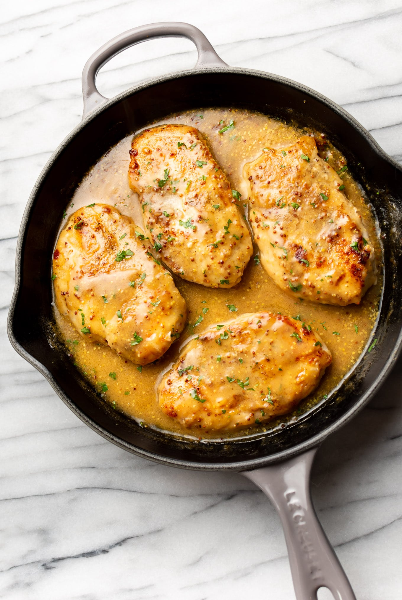

Mustard chicken

Description:
In this recipe, chicken breasts are coated with yellow mustard and french fried onions, then baked. It is so simple and fast to prepare! This goes great with rice or potatoes.
Ingredients:
- 1 cup of mustard
- 4 chicken breasts
- 1 can French-fried onions
- Preheat the oven to 190 degrees Celsius
- Place mustard in a shallow dish or bowl, place onions in a second shallow dish or bowl. Dredge chicken in a lightly greased 9x13-inch baking dish.
- Bake for 50 to 60 minutes or until chicken is cooked through and juices run clear.